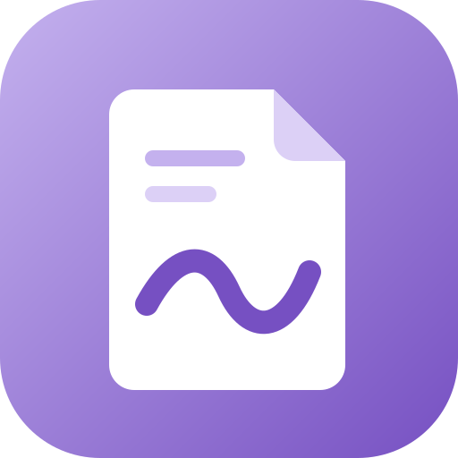
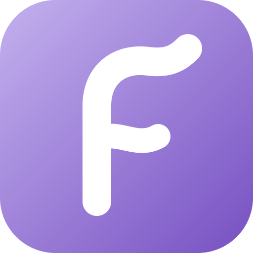
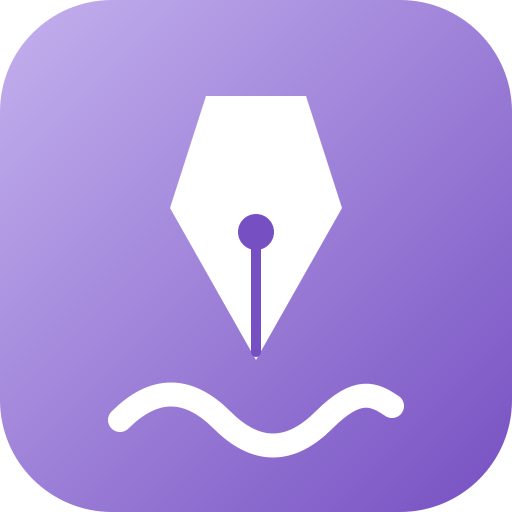
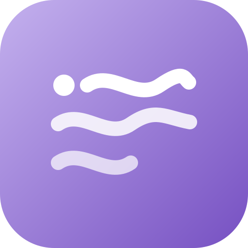

A · Flow PageA note page with a flowing pen stroke. Reads as "notes" instantly; closest to the app's purpose.
B · Ribbon FThe letter F drawn as one flowing ribbon. Monogram style; very legible at 16px.
C · Nib & WaveA pen nib leaving a wave of ink: writing that flows. Pairs well with the Draw tab.
D · Flow LinesLines of text drawn as waves, starting from a cursor dot. Minimal and modern.Soft lavender — lavender-100 bar, lavender-900 text. Calm, good for long writing sessions. (Recommended for the app.)
Bold lavender — lavender-700 → 500 gradient, white text. Strong brand presence; used for the documentation cover.
Install FlowNote on Linux or Windows, and learn the everyday tasks.
--accent becomes lavender-600 and --accent-dark lavender-800 in guide.css.